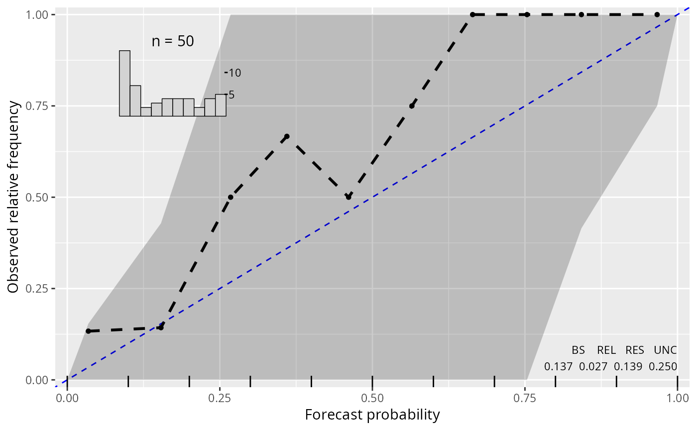

Plotting a Reliagram (Extended Reliability Diagram)
plot.reliagram.RdReliagram (extended reliability diagram) for assessing the reliability of a fitted probabilistic distributional forecast.
# S3 method for reliagram plot( x, single_graph = FALSE, minimum = 0, confint = TRUE, ref = TRUE, xlim = c(0, 1), ylim = c(0, 1), xlab = NULL, ylab = NULL, main = NULL, col = "black", fill = adjustcolor("black", alpha.f = 0.2), alpha_min = 0.2, lwd = 2, pch = 19, lty = 1, type = NULL, add_hist = TRUE, add_info = TRUE, add_rug = TRUE, add_min = TRUE, axes = TRUE, box = TRUE, ... ) # S3 method for reliagram lines( x, minimum = 0, confint = FALSE, ref = FALSE, col = "black", fill = adjustcolor("black", alpha.f = 0.2), alpha_min = 0.2, lwd = 2, pch = 19, lty = 1, type = "b", ... ) # S3 method for reliagram autoplot( object, single_graph = FALSE, minimum = 0, confint = TRUE, ref = TRUE, xlim = c(0, 1), ylim = c(0, 1), xlab = NULL, ylab = NULL, main = NULL, colour = "black", fill = adjustcolor("black", alpha.f = 0.2), alpha_min = 0.2, size = 1, shape = 19, linetype = 1, type = NULL, add_hist = TRUE, add_info = TRUE, add_rug = TRUE, add_min = TRUE, legend = FALSE, ... )
Arguments
| single_graph | logical. Should all computed extended reliability diagrams be plotted in a single graph? |
|---|---|
| minimum, ref, xlim, ylim, col, fill, alpha_min, lwd, pch, lty, type, add_hist, add_info, add_rug, add_min, axes, box | additional graphical
parameters for base plots, whereby |
| confint | logical. Should confident intervals be calculated and drawn? |
| xlab, ylab, main | graphical parameters. |
| ... | further graphical parameters. |
| object, x | an object of class |
| colour, size, shape, linetype, legend | graphical parameters passed for
|
Details
TODO: (ML)
References
Br\''ocker J, Smith L (2007). “Increasing the Reliability of Reliability Diagrams”. Weather and Forecasting, 22(3), 651--661. doi:10.1175/WAF993.1.
See also
Examples
require("crch") m1 <- lm(dist ~ speed, data = cars) m2 <- crch(dist ~ speed | speed, data = cars) m3 <- crch(dist ~ speed | speed, left = 30, data = cars) rel1 <- reliagram(m1, quantiles = c(0.2, 0.6), plot = FALSE) rel2 <- reliagram(m2, plot = FALSE) rel3 <- reliagram(m3, plot = FALSE) plot(c(rel1, rel2), single_graph = TRUE, col = c(1, 2, 3), lty = c(1, 2, 3), pch = c(1, 2, 3))